2
Setting up a SpectreRF Simulation
Using Virtuoso ADE Explorer
Starting with IC6.1.7, Cadence offers a new Virtuoso ADE product suite that enables you to fully explore, analyze, and verify a design against design goals so that the design intent can be maintained throughout the design cycle. The new generation of ADE product suite includes ADE Explorer, ADE Assembler, and ADE Verifier products.
You can use the tools in the new Virtuoso ADE product suite as your simulation environment because of the benefits they provide. The netlister netlists directly from the schematic. The Direct Plot Form automates all of the standard RF measurements. Cross-probing to the schematic is provided. Easy set-up of the analyses to be run is provided. ADE Explorer runs a single test and allows parallel processing of sweeps, corners and Monte Carlo. In ADE Assembler, multiple tests can be run at the same time. In ADE Verifier, you can import simulation data and measurements against the specs from all the members of the design team to get a real-time update of the design progress.
For more information on the new products, refer to the Virtuoso ADE Explorer User Guide, Virtuoso ADE Assembler User Guide, and Virtuoso ADE Verifier User Guide.
A Testbench
A testbench is the schematic with the sources set up to provide the stimulus, and the different analyses to provide the measurements. In the schematic, make sure that the sources used for inputs and bias are at the top level, and have the circuit instantiated as a symbol (which could have levels of hierarchy below that). This allows these sources to be connected to the circuit but not have any connection to layout.
The new ADE tools create a maestro view (see Creating Multiple Tests in ADE Assembler) that stores the setups of all the different tests. The different tests are like ADE L states.
ADE Explorer
ADE Explorer, incorporates some useful features of ADE XL while maintaining the simplicity and ease of use of ADE L. ADE Explorer is like ADE L in that it can run a single design and simulation setup at a time. It adds the ability to run parallel simulations in sweeps. Corners and Monte Carlo are also available along with real-time tuning (RTT) which is useful for rapidly tuning filters or matching networks. ADE Explorer also allows very easy transitions to ADE Assembler, which allows multiple tests and is similar to ADE XL. Like ADE XL, the simulation environment is in one tab, and the schematic is in another in ADE Explorer, as shown highlighted in the figure below.
You need to specify the following essential settings in the Virtuoso® ADE Explorer Setup before running a simulation — design variables, temperature, simulator, analysis, model files, and other setup files. You can also define the various outputs that are to be saved or plotted during a simulation run.
When you run a simulation, the results are saved in a predefined formats and can be used by other tools such as the Virtuoso Visualization and Analysis XL for further analysis. If there are signals in the simulation results, they are by default plotted in the Virtuoso Visualization and Analysis XL Graph window.
Analysis form
The Choosing Analysis form is provided for each analysis type you want to run. The Choosing Analysis form lists the sources in your circuit at the top. The number of harmonics and oversample factor are set in the edit fields just below the list. Accuracy is set by selecting liberal, moderate, or conservative. In general, to get a quick idea, choose liberal. For most simulations, choose moderate. When a more accurate simulation is desired, select conservative. If you have an oscillator, select the oscillator button. Sweeps can be set up in the form directly, or by using the parametric plot tool in ADE.
Each analysis has its own Choosing Analysis form where the appropriate information is entered for that analysis.
Direct Plot form
The Direct Plot form automates the plotting of signals. At the top, all the different analyses that were run are listed. Just below are the different things that can be plotted. In SpectreRF, both the time and frequency domain results are provided regardless of whether the simulation is done in the time domain using Shooting, or in the frequency domain using Harmonic Balance. Peak or RMS results are available, and when frequency domain results are present, modifiers are allowed so that dB or phase could be selected for the results.
When a selection is made in the schematic, the waveform tool displays the result. In ADE Explorer, by default, the waveform is docked in the ADE Explorer window, as shown in the figure below.
You can click the Launch ViVA icon (shown highlighted above) to display the waveform separately in the Virtuoso Visualization and Analysis tool (ViVA).
Netlist Driven Flows
Netlist-driven flows start with a netlist. This might be done manually, or from a netlister that is developed in house. The netlister may or may not add the analysis statements to the netlist. One advantage to running from the netlist is the ability to alter a value and then run again, or to run multiple analyses of the same type with different settings.
To get spectre help for the netlist-driven flow, type spectre -h in a shell window. This gives a list of topics that have help available for, and then you might for example type spectre -h pss. When you do this, you will see the analysis statement and all the options along with all the values that are available.
When the netlist has the proper analysis statements, you can run spectre. Examples of this are shown below:
spectre netlist.scs
spectre +aps +mt=2 +log spectre.out netlist.scs (This runs APS with 2 threads and a log file spectre.out)
When Spectre runs, the results are saved in the <netlist_name>.raw directory. To view the results, type viva& in a shell window, and then plot the waveforms from the Results Browser and the Calculator.
Creating Multiple Tests in ADE Assembler
The tools in the new ADE product suite do not have the capability to save ADE states. However, you can create and use the equivalent of ADE states in the new ADE environment. You can create multiple tests in ADE assembler that correspond to multiple ADE states. These tests are saved in the maestro view.
The following is an example of creating multiple tests in the ADE Assembler:
-
Open a design in ADE Explorer. To do this, launch virtuoso and select Tools - Library Manager from the Virtuoso window. The Library Manager window is displayed, as shown below.
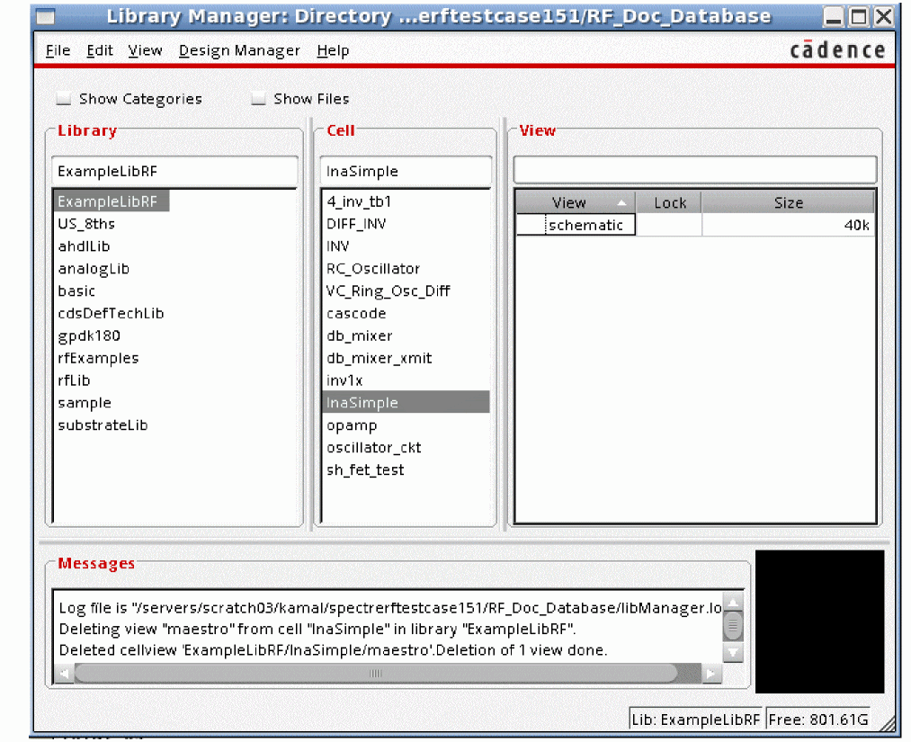 - Select a library from the Library section, cell from the Cell section, and double-click on the schematic view in the View section.
-
The schematic is displayed in the Virtuoso Schematic Editor window, as shown below.
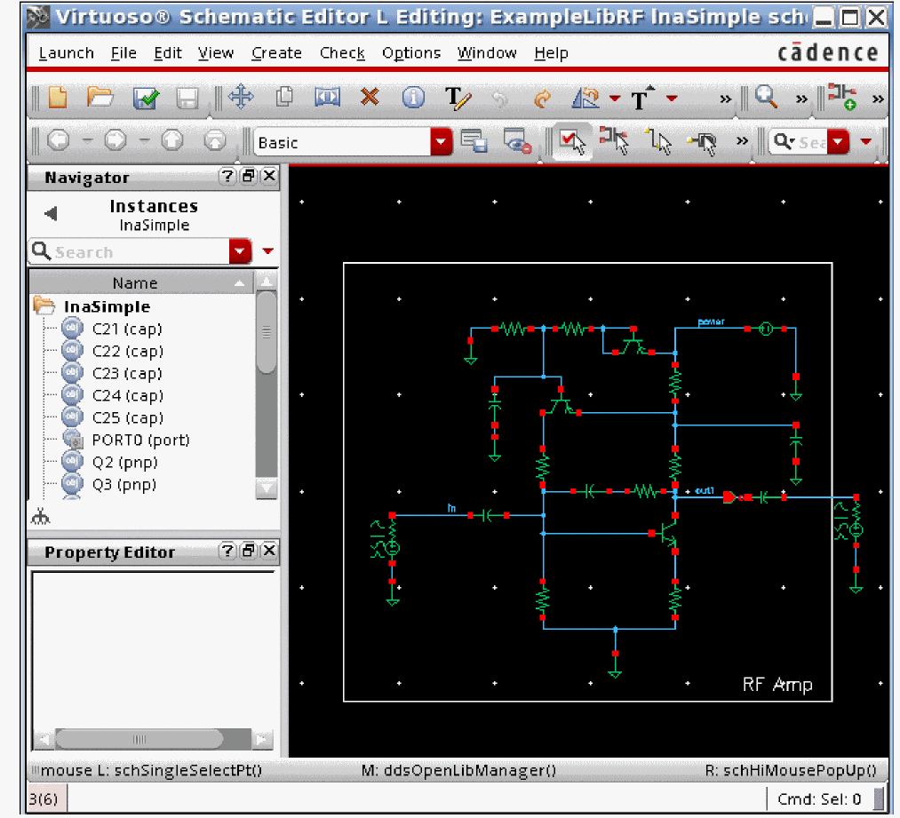 -
Select Launch - ADE Explorer to open the ADE Explorer window.
The Launch ADE Explorer form is displayed, as shown below.
-
Select the Create New View option and click OK.
The Create new ADE Explorer view window is displayed, as shown below.
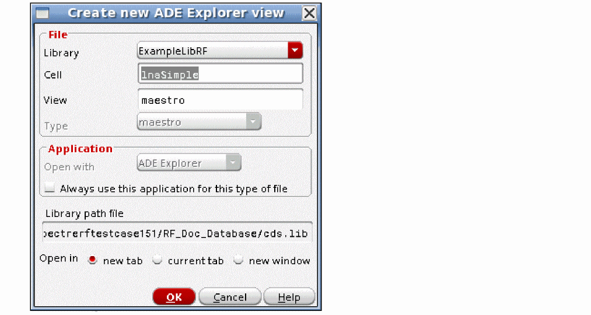 -
Click OK.
ADE Explorer will start in a new tab, as shown below.
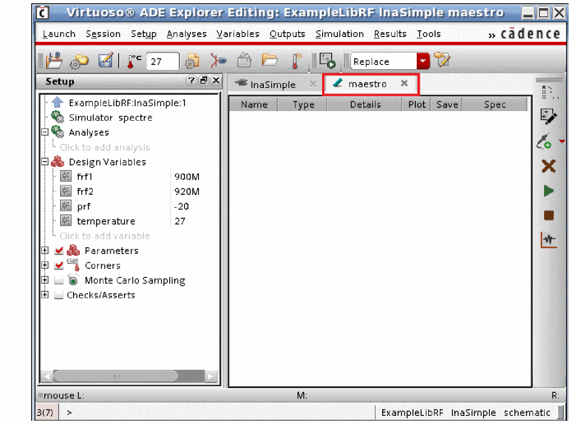 - Click on the test ExampleLibRF:lnaSimple:1 twice and change the name to Setup.
-
Press Enter.
The name of the test will change to Setup, as shown below.
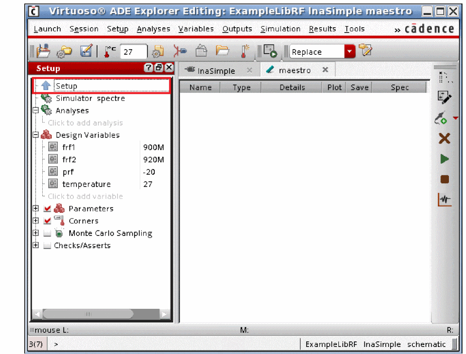 -
Select Analyses - Choose
The Choosing Analyses form is displayed, as shown below.
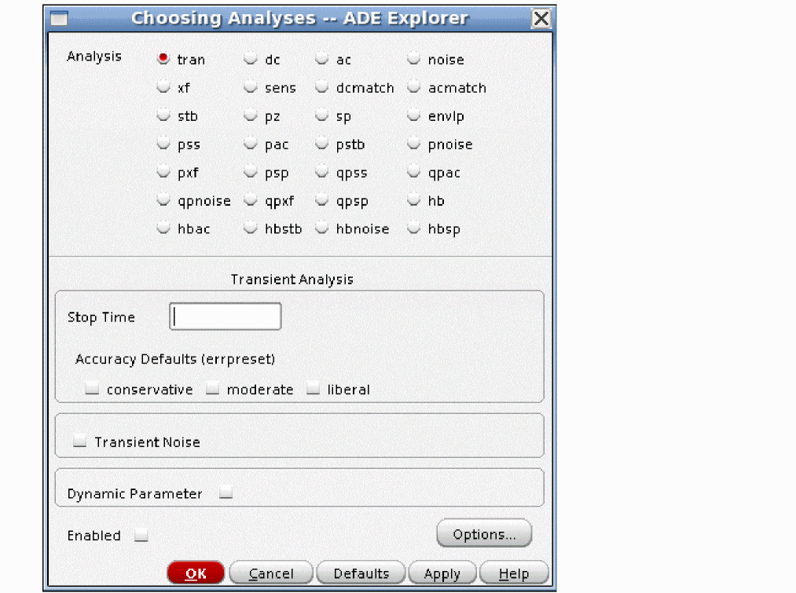 -
In the Choosing Analyses form, select the dc option from the Analysis section.
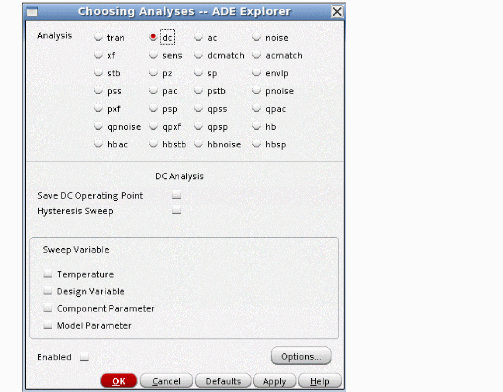 - Select the Save DC Operating Point option.
- Click OK.
- Choose Simulation - Run to run the simulation. Alternatively, you can click the green arrow button located on the right of the ADE Explorer window to run the simulation.
-
After the simulation run is complete, click the blue up arrow button located to the left of Setup, under the Setup pane, The ADE Assembler window is displayed with Setup displayed under Tests in the Data View assistant, as shown below.
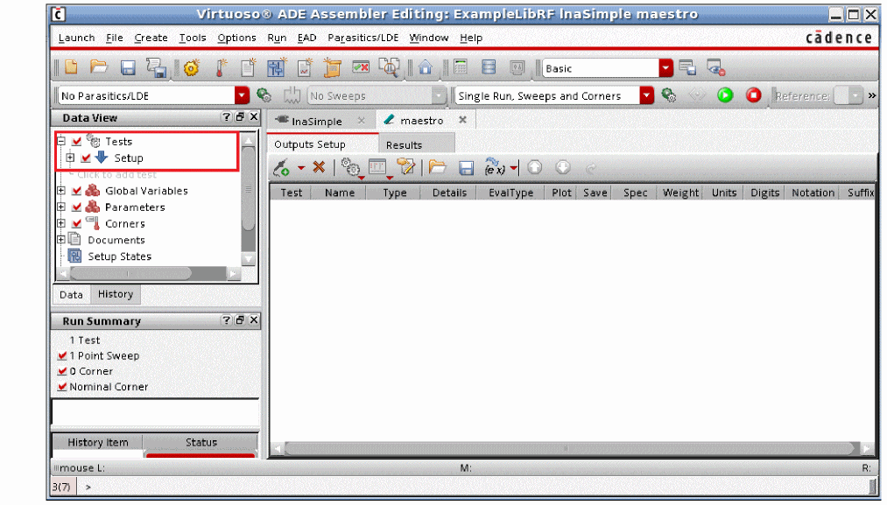 -
Click the right mouse button on Setup and select the Create Test Copy option from the context menu.
A copy of Setup by the name Setup:1 is created, as show below.
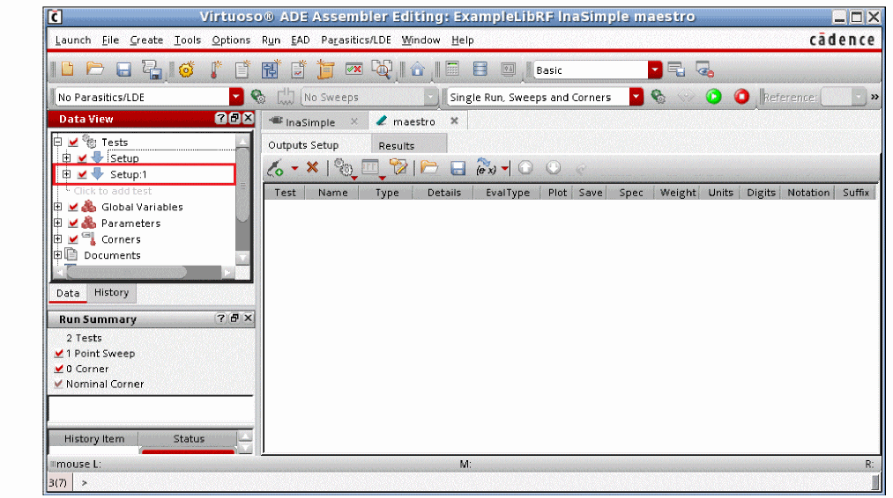 -
Click twice on Setup:1 and change the name to AC_DC.
Click the + signs to the left of AC_DC and Analyses to see that dc analysis is added under AC_DC as it was set under Setup. - Click on Click to add analysis text under dc analysis. The Choosing Analyses form is displayed.
- In the Choosing Analyses form, select ac from the Analysis section.
- Select Start-Stop for Sweep Range and type 1M in the Start field and 10G in the Stop field.
- Select Logarithmic from the Sweep Type drop-down list.
-
Type 20 in the Points Per Decade field.
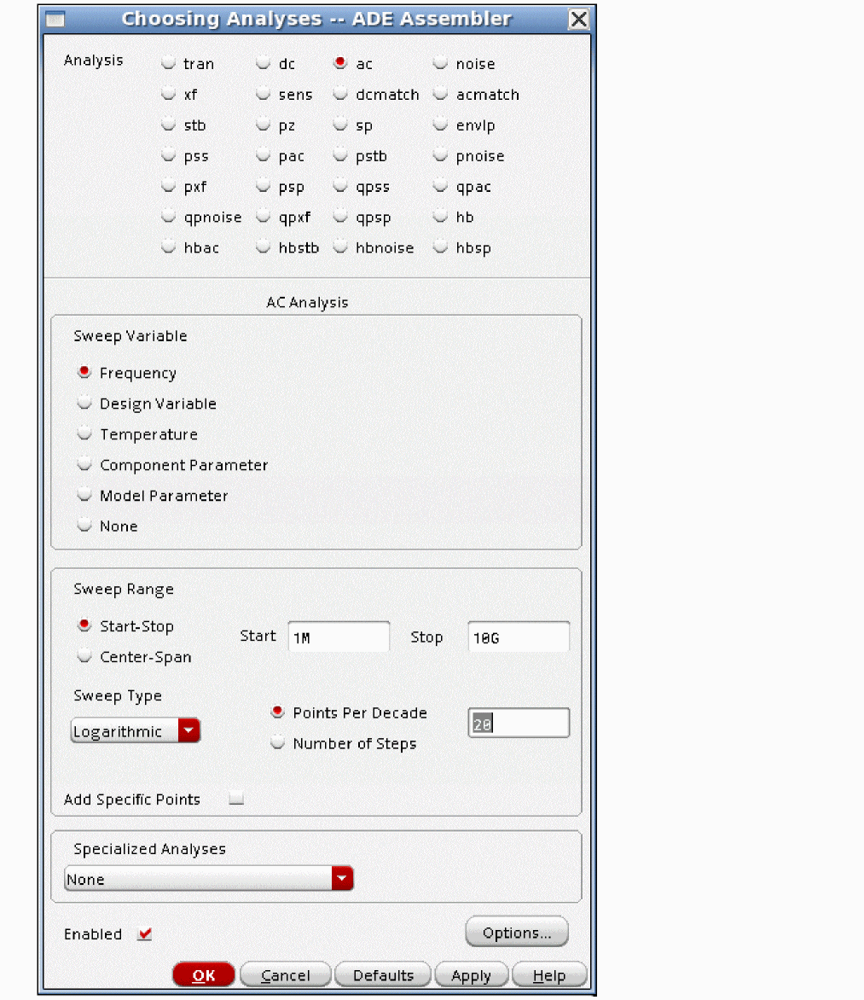 -
Click OK.
Note that ac analysis is added in the test, as shown below.
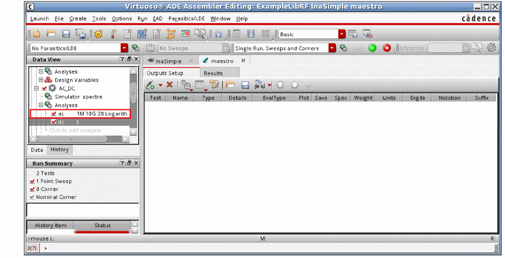You now have two tests, Setup and AC_DC in ADE Assembler. You can create multiple tests in ADE assembler in the same manner. You can click on the down blue down arrow symbol to the left of any test to open the test in ADE Explorer, as shown below.
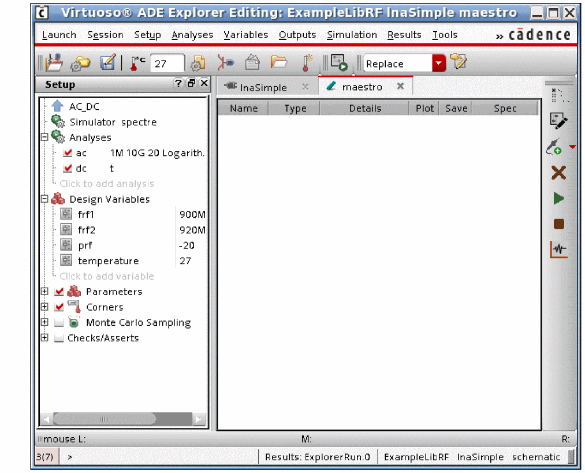
When you click an Up arrow, you switch from the single-test ADE Explorer environment to the multi-test ADE Assembler environment. When you click a down arrow, you switch from the ADE Assembler multi-test environment back to the ADE Explorer single-test environment. ADE Assembler can be thought of as the place where multiple ADE states are created and managed. In this environment, you can run all or any subset of the tests that are defined. When you switch to the ADE Explorer environment, you are in the single-test equivalent of ADE L.
Return to top